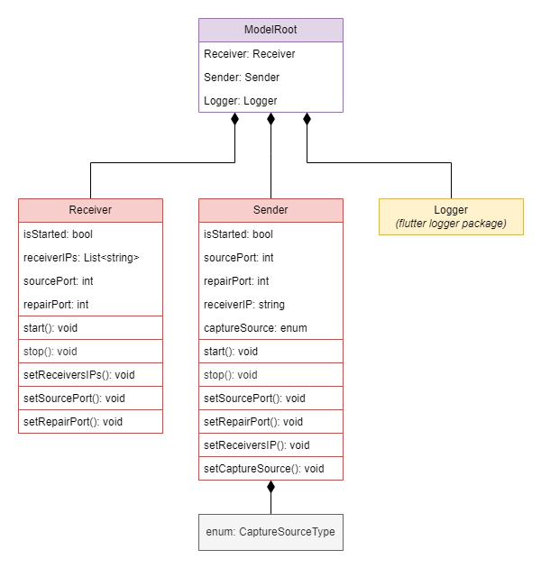

Model
Model tree

The roc-droid Model module is responsible for managing the data model of the application's graphical interface. Data changes in the model are initiated by the Agent module and then utilized by the UI module.
Description of the model tree:
-
The roc-droid client application's model is based on the
ModelRootclass, highlighted in violet. -
Class implementation: ModelRoot
-
The
ModelRootclass itself is derived from two base classes:ReceiverandSender, both highlighted in red. -
The red classes contain
@observable,@computedfields and@actionmethods provided in theMobxpackage. -
Receiver implementation: Receiver
- The Receiver has its own automatically generated code for the correct operation of
Mobx: receiver.g.dart
- The Receiver has its own automatically generated code for the correct operation of
-
Sender implementation: Sender
- The Sender has its own automatically generated code for the correct operation of
Mobx: sender.g.dart
- The Sender has its own automatically generated code for the correct operation of
-
The
Loggerclass is managed by the Flutterloggerpackage and is highlighted in yellow. -
The
CaptureSourceTypeenumerator control the type of capture source and is colored gray. -
enum implementation: CaptureSourceType